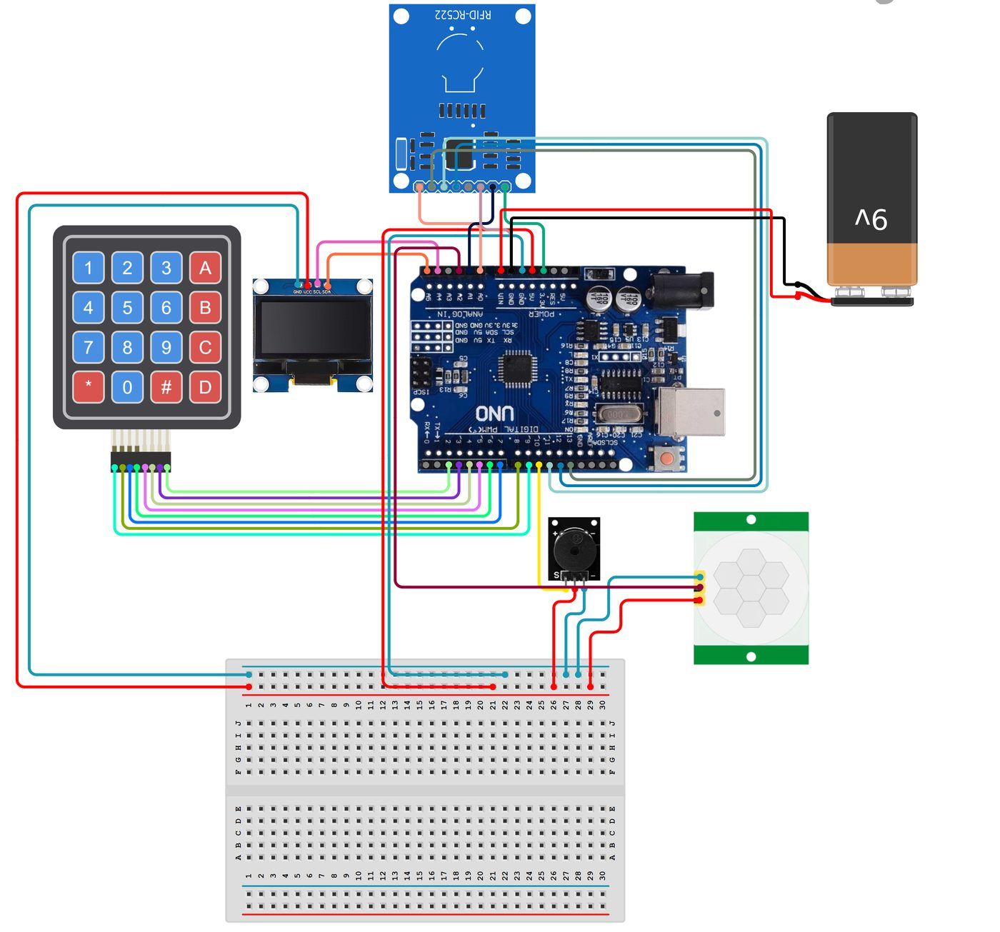
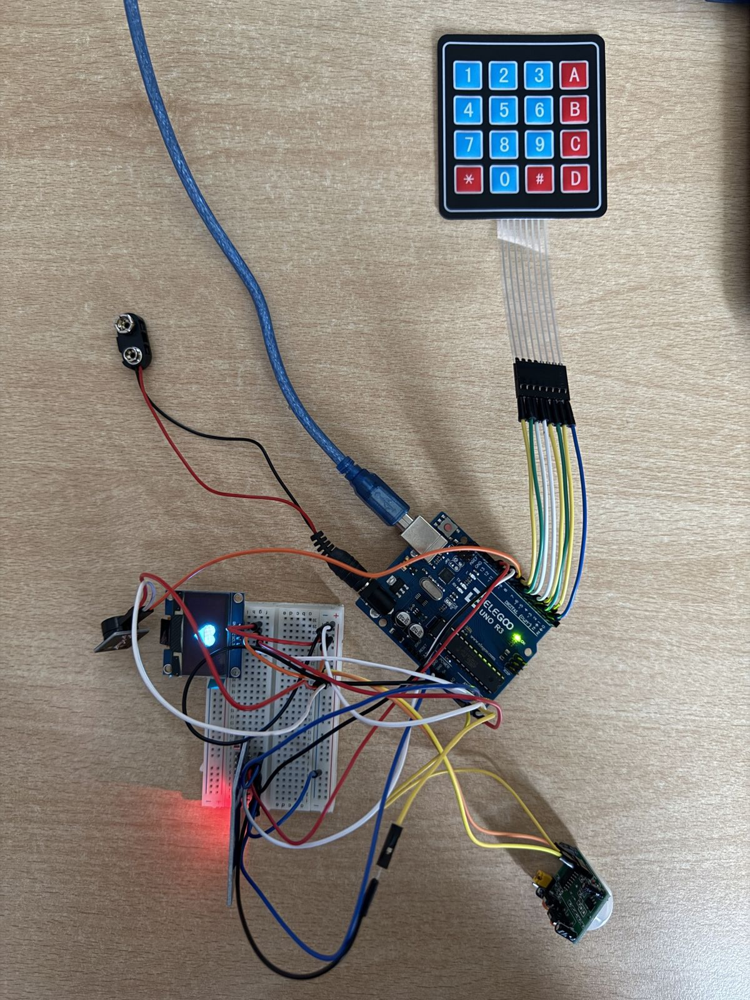
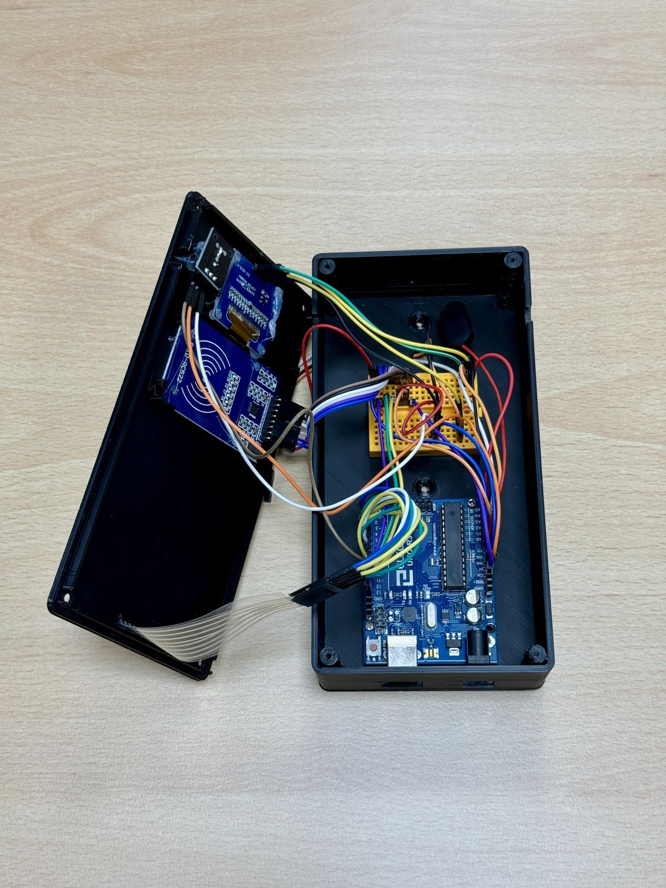
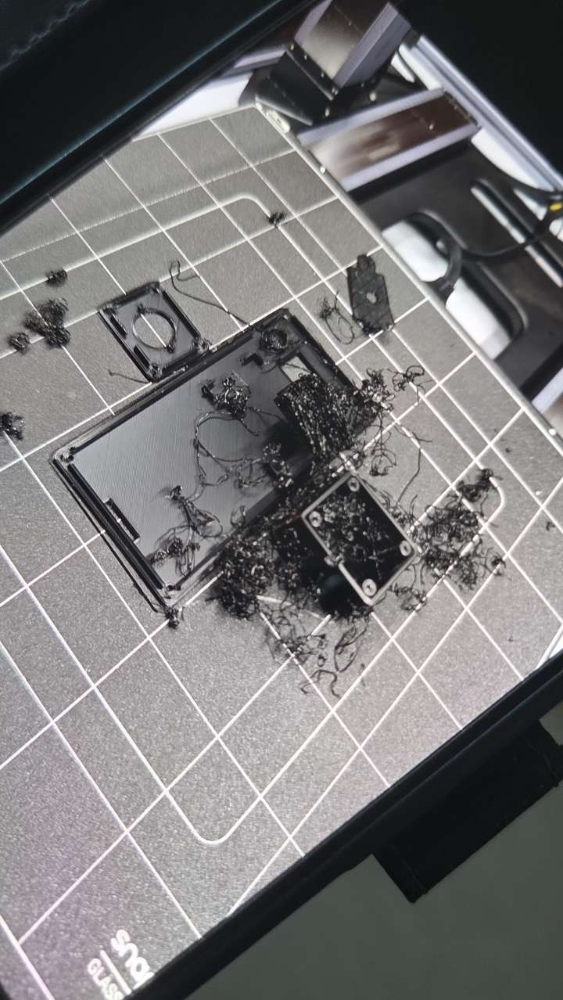

Projekt GAS
Ein Mini-Sicherheitssystem für eine Tür, gebaut auf dem Arduino Uno
Ablauf
Die Folien folgen den Kapiteln unserer Dokumentation. Die Nummer oben links ist jeweils das Kapitel.
Ein Raum, den nicht jeder betreten soll
Zum Beispiel ein Lager- oder Serverraum. Wer berechtigt ist, schaltet die Anlage an der Tür scharf, bevor er geht, und beim Zurückkommen wieder unscharf. Betritt jemand den Raum, während sie scharf ist, gibt es lauten Alarm.
Wir wollten nur mit den Bauteilen aus der Schule arbeiten und etwas bauen, das man tatsächlich benutzen könnte.
Was die Anlage können muss
Muss, aus unserer ersten Beschreibung
- Scharf und unscharf mit PIN, bestätigt mit #
- PIN erscheint beim Tippen nur als
* - Bewegung löst nur im scharfen Zustand Alarm aus
- Alarm laut und schrill, 30 Sekunden
- Heller Ton bei richtiger PIN, rauer Ton bei falscher
- 3 Fehleingaben lösen den Alarm aus
- Display: Totenkopf scharf, Herz unscharf
Kann, im Lauf des Projekts dazugekommen
| Anforderung | Herkunft |
|---|---|
| RFID-Karte als zweiter Weg | eigene Idee |
| 10 s Ausgangsverzögerung | Vorschlag von Claude Code |
| Karten am Gerät anlernen | Lehrkraft |
| RFID-Reset, falls der Leser hängt | Lehrkraft |
| 3D-gedrucktes Gehäuse | eigene Idee |
| 3D-Modell im Browser | eigene Idee |
Alle 13 Anforderungen sind umgesetzt. Bewusst nicht dabei: Netzwerk, App, Protokoll und Dauerbetrieb.
Zwei Gehäuse, dazwischen die Wand
Das Bedienteil hängt außen neben der Tür, das Sensorteil innen. Der Bewegungsmelder sieht nicht durch die Wand: Wer draußen die PIN eintippt, löst nichts aus.
Fünf Zustände
Symbole und Töne statt Text
| Ereignis | Display | Ton |
|---|---|---|
| Taste gedrückt | * pro Ziffer | kurzer Klick |
| Richtige PIN oder Karte | neues Symbol | heller Doppelton |
| Falsche PIN oder Karte | Kreuz | rauer Brummton, 2 s |
| Ausgangsverzögerung | Totenkopf, Countdown | Piep jede Sekunde |
| Alarm | blinkt, Restzeit | Sirene, auf und ab |
Die Bauteile
- Arduino Uno R3 (Elegoo): ATmega328P, 2 KB SRAM, 1 KB EEPROM
- Keypad 4x4 für PIN, #, *, A, B
- OLED 1,3 Zoll, 128 x 64 Pixel, Controller SH1106
- RFID-Leser RC522, 13,56 MHz, läuft mit 3,3 V
- Bewegungsmelder HC-SR501, HIGH bei Bewegung
- Passiver Buzzer: spielt jede Tonhöhe über
tone() - Mini-Breadboard und 9-V-Block für den Strom
Pin-Zuordnung
| Bauteil | Pins am Uno | Bus |
|---|---|---|
| Keypad, Reihen und Spalten | D9 bis D6, D5 bis D2 | Matrix |
| OLED | A4 SDA, A5 SCL | I²C, fest |
| RC522 Daten | D11 MOSI, D12 MISO, D13 SCK | SPI, fest |
| RC522 Auswahl, Reset, Strom | A0, A1, 3,3 V | SPI |
| Bewegungsmelder, Buzzer | A2, D10 | digital |
Frei sind nur noch A3 und D0/D1. D0/D1 brauchen wir für Upload und seriellen Monitor.

Strom über VIN
- Geplant: 9-V-Block im Gehäuse an VIN, der Uno macht daraus 5 V und 3,3 V
- VIN hat keinen Verpolungsschutz, Plus und Minus vertauscht heißt Uno kaputt
- Laufzeit geschätzt 3 bis 5 h, nicht gemessen. Vorgeführt wird über USB
| Spalte | Netz | Was steckt drin |
|---|---|---|
| 13 oben | +5 V | Uno 5V, OLED, Buzzer, Bewegungsmelder |
| 15 oben | GND | alle Massen, Batterie minus |
| 17 unten | +9 V | Batterie plus, Brücke zu VIN |
Der echte Aufbau


Das Gehäuse
- Fünf Druckteile aus PLA, geplant in OpenSCAD
- Bedienteil außen: Uno, Keypad, Display, RFID-Leser, Buzzer, Mini-Breadboard
- Der Kartenleser liest durch 2,4 mm Kunststoff
- Sensorteil innen, auf einem 60°-Keil zur Tür gedreht, verbunden über ein 3-adriges Kabel
Gedruckt auf dem Snapmaker Artisan der Schule, von dem nur die rechte Düse funktioniert.
Vier Sketches, eine Hauptfirmware
| Datei | Zweck |
|---|---|
alarm_system.ino | Hauptfirmware, gut 1000 Zeilen |
hardware_test.ino | prüft jedes Bauteil einzeln |
display_test.ino | nur das OLED, zeigt freien SRAM |
rfid_test.ino | nur der RC522, zeigt jede UID |
Der vollständige Code liegt im Repository im Ordner Code/. Bibliotheken: Adafruit SH110X und GFX, MFRC522, dazu Wire, SPI und EEPROM.
Nichts darf blockieren
void loop() {
if (state == STATE_ADMIN) {
handleAdminKeypad();
handleAdminRfid();
} else {
handleKeypad();
handleRfid();
}
handleMotion();
updateState();
updateSound();
updateDisplay();
}
Es gibt kein delay(). Mit delay(30000) für die Sirene könnte niemand den Alarm beenden. Das Programm merkt sich mit millis(), wann etwas angefangen hat, und prüft bei jedem Durchlauf, ob die Zeit um ist.
Der Zustandsautomat
void setState(SystemState next) {
state = next;
stateStart = millis(); // when this state began
}
void updateState() {
unsigned long now = millis();
if (state == STATE_EXIT_DELAY) {
if (now - stateStart >= EXIT_DELAY_MS) {
setState(STATE_ARMED);
}
} else if (state == STATE_ALARM) {
if (now - stateStart >= ALARM_MS) {
stopSound();
setState(STATE_ARMED); // stay armed
}
}
}
Nach dem Alarm bleibt die Anlage scharf. Sonst könnte ein Einbrecher einfach 30 Sekunden warten.
Zugriff erlaubt oder verweigert
void accessGranted() {
wrongTries = 0;
switch (state) { /* active: disarm, else: arm */ }
startSound(SOUND_OK);
}
void accessDenied(const __FlashStringHelper *reason) {
if (state == STATE_ALARM) {
stateStart = millis(); // wrong entry restarts the 30 s
return; // no error tone
}
wrongTries++;
if (wrongTries >= MAX_WRONG_TRIES) {
wrongTries = 0;
triggerAlarm(reason);
} else {
startSound(SOUND_ERROR);
}
}
PIN und Karte rufen dieselben zwei Funktionen auf. Deshalb verhalten sich beide Wege garantiert gleich.
Töne ohne Warten
case SOUND_ALARM: {
unsigned long phase = t % 500UL; // 500 ms
unsigned long step = (phase % 250UL) / 10UL; // 0..24
int freq = (phase < 250UL) ? (2500 + (int)step * 50)
: (3700 - (int)step * 50);
setFreq(freq);
break;
}
Fehlerton: wechselt alle 35 ms zwischen 95 und 135 Hz, 2 s lang. OK: 1568 Hz, dann 2093 Hz. setFreq() ruft tone() nur bei neuer Frequenz auf, sonst knackt es.
Das Tastenfeld fragen wir selbst ab
char scanKeypad() {
char found = 0;
for (byte c = 0; c < 4 && found == 0; c++) {
pinMode(COL_PINS[c], OUTPUT); // pull this column low
delayMicroseconds(5); // let the line settle
for (byte r = 0; r < 4; r++) {
if (digitalRead(ROW_PINS[r]) == LOW) {
found = pgm_read_byte(&KEYS[r][c]);
break;
}
}
pinMode(COL_PINS[c], INPUT); // back to high-Z
}
return found;
}
Die Keypad-Library hätte rund 120 Byte SRAM gekostet. Eine Taste zählt erst nach 20 ms stabil gedrückt (entprellt).
Bewegung erkennen
void handleMotion() {
bool motion = (digitalRead(MOTION_PIN) == HIGH);
// rising edge only
if (motion && !lastMotion && state == STATE_ARMED) {
triggerAlarm(F("motion detected"));
}
lastMotion = motion;
}
- Nur der Wechsel von LOW auf HIGH zählt. Eine lange Bewegung löst einmal aus.
- Nur im Zustand scharf, nicht während der Ausgangsverzögerung.
- Beim Scharfschalten wird
lastMotionauf den aktuellen Wert gesetzt.
Karten lesen und dauerhaft speichern
bool readNewCardUid() {
if (!rfidOk || millis() - lastRfidPoll < RFID_POLL_MS) {
return false; // only every 200 ms
}
lastRfidPoll = millis();
if (!mfrc522.PICC_IsNewCardPresent() ||
!mfrc522.PICC_ReadCardSerial()) {
return false;
}
mfrc522.PICC_HaltA(); // send the card to sleep
return true;
}
| EEPROM-Adresse | Inhalt |
|---|---|
| 0 | Kennbyte 0xA5: schon einmal gespeichert |
| 1 | Anzahl der Karten, höchstens 8 |
| ab 2 | je 4 Byte UID pro Karte |
Karten verwalten ohne PC
- Anlage unscharf: A, Admin-PIN, #
- 1 Karte anlernen: einfach an den Leser halten
- 2 Liste: # blättern, D löschen
- * verlassen, nach 20 s ohne Eingabe schließt es selbst
Eine falsche Admin-PIN zählt als Fehlversuch. Höchstens 8 Karten, weil der Speicher knapp ist.
Von September bis heute
Das Display bleibt leer
- Problem
- Mit dem Code aus fast allen Anleitungen zeigt unser Display nichts oder nur Streifen.
- Ursache
- Die Anleitungen nutzen den Controller SSD1306. Unser 1,3-Zoll-Display hat einen SH1106. Beide sehen gleich aus.
- Lösung
- Library Adafruit SH110X mit der Klasse
Adafruit_SH1106G, Adresse0x3C.
2048 Byte Arbeitsspeicher
Erst Pixelmüll auf dem Display, dann Neustarts und eine richtige PIN, die plötzlich falsch war. Der serielle Monitor zeigte free SRAM: 205.
- Alle Texte mit
F()im Flash, Tabellen mitPROGMEM - Kein
snprintf, keine Textpuffer - Keypad-Library raus, Matrix selbst abfragen (rund 120 Byte)
- Fertiges Gerät mit RFID und Admin-Menü: 252 Byte frei, stabil
Eine falsche PIN beendete den Alarm
- Problem
- Falsche PIN im Alarm: kurz der Fehlerton, danach war die Sirene aus.
- Ursache
- Es läuft immer nur ein Ton. Der Fehlerton hat die Sirene ersetzt.
- Lösung
- Im Alarm kein Fehlerton mehr, die Sirene läuft weiter.
- Danach
- Beim Test am fertigen Gerät fiel auf: Im Alarm konnte man in Ruhe Codes durchprobieren. Jetzt startet jede falsche Eingabe die 30 Sekunden neu.
Zwei Bauteile, ein Pin
- Problem
- Der Bewegungsmelder hing an D11. Der RFID-Leser braucht D11 als MOSI.
- Lösung
- Bewegungsmelder auf A2. Analoge Pins funktionieren auch als Digitalpins.
- Dazu
SPI.begin()schaltet D10 auf HIGH, weil D10 der SS-Pin ist. Dort hängt der Buzzer. Deshalb setzen wir den Buzzer-Pin erst danach auf LOW.
Der RFID-Leser
- 3,3 V
- Der RC522 ist für 3,3 V gebaut, 5 V zerstören ihn. Der 3,3-V-Pin liefert 50 mA, der Leser braucht 13 bis 26 mA.
- Hängt
- Günstige Nachbauten antworten manchmal nicht mehr. Auf Anregung der Lehrkraft startet Taste B nur den Leser neu und prüft danach die Version.
Unser Nachbau meldet 0xB2 statt 0x91 oder 0x92. Die Firmware wertet nur 0x00 und 0xFF als Fehler.
Wohin mit dem Bewegungsmelder?
Im Bedienteil hätte er die Person gesehen, die gerade die PIN eintippt. Flach an der Wand im Raum schaut er geradeaus und erfasst die Tür nur am Rand.
Erster Keil mit 30°: besser, aber noch nicht sicher.
Mit 60° reicht der Erfassungsbereich bis an die Wand und deckt den ganzen Eingang ab.
Druck und Einbau


- Zapfen brachen ab: 1,2 mm Wand, die Schraube lief auf Grund. Jetzt ein 8 mm breiter Steg und ein 4,8 mm tiefes Loch.
- Batterie passte nicht: Am Hohlstecker hätte sie außen gehangen. Jetzt innen an VIN.
- Drucker: Am Snapmaker der Schule funktioniert nur eine Düse, ein Druck musste wiederholt werden.
Was am Ende steht
| Ziel | Ergebnis |
|---|---|
| 7 Muss-Anforderungen | alle |
| 6 Kann-Anforderungen | alle |
| Tests T1 bis T9 am fertigen Gerät | bestanden |
| Gehäuse gedruckt und eingebaut | ja |
| Montage auf einer Holzplatte | entfallen |
| Laufzeit mit Batterie | nur geschätzt |
Was wir gelernt haben
- Erst das Datenblatt, dann der Code
- 2 KB SRAM sind schnell voll, jedes Byte zählt
- Nie blockieren:
millis()stattdelay() - Feste Pins für I²C und SPI früh einplanen
- Dünne Druckteile halten wenig aus
Was noch ginge
- Benachrichtigung aufs Handy, zum Beispiel mit einem ESP32 und WLAN
- Protokoll, wer wann welche Karte benutzt hat
- Netzteil oder Akku für Dauerbetrieb
- Sabotagekontakt am Gehäuse
Der Uno ist voll: nur noch A3 frei und 252 Byte SRAM. Für mehr bräuchte es einen größeren Controller.
Wie wir KI genutzt haben
| Wir | Claude Code |
|---|---|
| Idee und Anforderungen | Firmware nach unseren Anforderungen |
| Aufgebaut, verdrahtet, getestet | Fehlersuche aus unseren Logs |
| Jede Version kompiliert und geprüft | Gehäuse in OpenSCAD, 3D-Modell |
| Entscheidungen getroffen | Grafiken und Protokoll |
Die KI hatte keinen Zugriff auf die Hardware. Geprüfte Fakten wie Pins und Display-Controller stehen in CLAUDE.md, die sie bei jedem Schritt liest. Prompts stehen nicht in der Doku.
Live-Demo
- Unscharf: Herz
- Karte auflegen: 10 s, dann Totenkopf
- Hand vor den Bewegungsmelder: Alarm
- Falsche PIN: Sirene läuft weiter, Restzeit wieder 30 s
- Richtige PIN und #: Herz
- Wenn Zeit ist: neue Karte anlernen
Jan bedient, Hugo erklärt.
Fragen?


Datenblätter, Bibliotheken und Werkzeuge stehen in Kapitel 10 der Dokumentation.